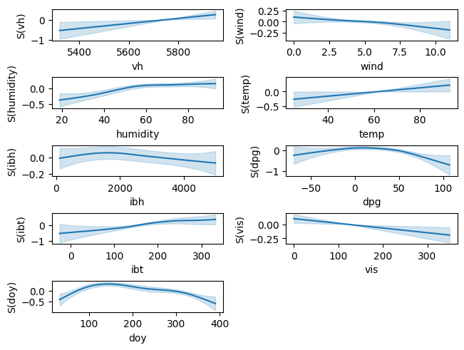
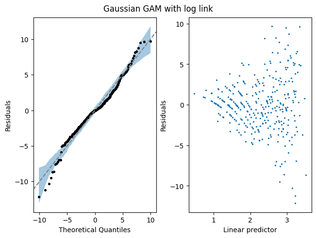
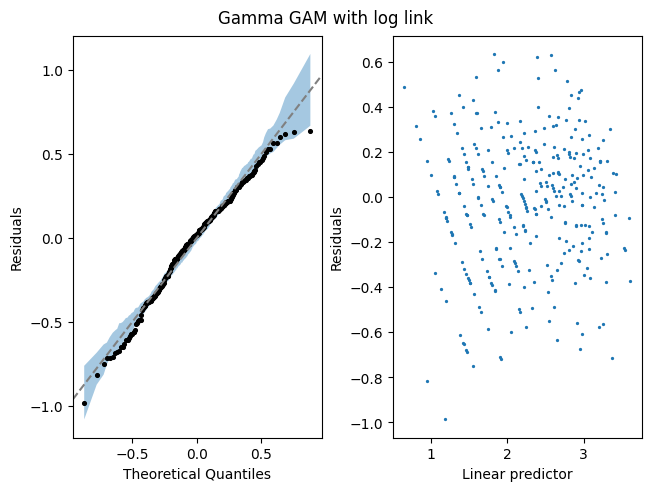

Ozone modelling
A practical example of modelling ozone levels, with manual variable selection via p-values and residual checking. The data contains
- vh - the height at which the atmospheric pressure is 500mb, in metres
- wind - the wind speed
- humidity - Percentage humidity
- temp - air temperature in Fahrenheit
- ibh - the inversion layer base height in feet
- ibt - the inversion base temperature in Fahrenheit
- dpg - Dagget air pressure gradient in mmhg
- vis - visibility in miles
- doy - day of year
import matplotlib.pyplot as plt
import pymgcv.plot as gplt
from pymgcv.families import Gamma, Gaussian
from pymgcv.gam import GAM
from pymgcv.terms import S
from pymgcv.utils import load_rdata_dataframe_from_url
data = load_rdata_dataframe_from_url(
"https://github.com/mfasiolo/testGam/raw/master/data/ozone.rda",
)
data.columns = [c.lower().replace(".", "_") for c in data.columns]
data.head()
# 14.9, 18.4, 22.6
o3 vh wind humidity temp ibh dpg ibt vis doy
1 3 5710 4 28 40 2693 -25 87 250 33
2 5 5700 3 37 45 590 -24 128 100 34
3 5 5760 3 51 54 1450 25 139 60 35
4 6 5720 4 69 35 1568 15 121 60 36
5 4 5790 6 19 45 2631 -33 123 100 37
Let's define a basic model for ozone, o3, with Gaussian residuals and log link, using all possible covariates
covariates = [colname for colname in data.columns if colname != "o3"]
gam_log_link = GAM(
{"o3": [S(var) for var in covariates]},
family=Gaussian(link="log"),
)
gam_log_link.fit(data)
gplt.plot(gam_log_link, ncols=2);

# Diagnostic plots
fig, axes = plt.subplots(ncols=2, layout="constrained")
gplt.qq(gam_log_link, ax=axes[0])
gplt.residuals_vs_linear_predictor(gam_log_link, ax=axes[1])
fig.suptitle("Gaussian GAM with log link");

We can see the residuals get larger with the linear predictor so we can try a gamma response distribution
gam_gamma_log_link = GAM(
{"o3": [S(var) for var in covariates]},
family=Gamma(link="log"),
)
gam_gamma_log_link.fit(data)
fig, axes = plt.subplots(ncols=2, layout="constrained")
gplt.qq(gam_gamma_log_link, ax=axes[0])
gplt.residuals_vs_linear_predictor(gam_gamma_log_link, ax=axes[1])
fig.suptitle("Gamma GAM with log link")
fig.show()

The residuals look much better! Let's test against the identity link
gam_gamma_id_link = GAM(
{"o3": [S(var) for var in covariates]},
family=Gamma(link="identity"),
)
gam_gamma_id_link.fit(data)
models = {
"gamma log link": gam_gamma_log_link,
"gamma identity link": gam_gamma_id_link,
}
for name, model in models.items():
print(f"{name}: AIC = {model.aic():.2f}, total EDF = {sum(model.edf()):.2f}")
gamma log link: AIC = 1653.13, total EDF = 25.34
gamma identity link: AIC = 1677.95, total EDF = 31.45
The multiplicative model (log link) looks better. Let's consider if we can drop any terms.
Family: Gamma
Link function: log
Formula:
o3 ~ s(vh) + s(wind) + s(humidity) + s(temp) + s(ibh) + s(dpg) +
s(ibt) + s(vis) + s(doy) + 1
Parametric coefficients:
Estimate Std. Error t value Pr(>|t|)
(Intercept) 2.25587 0.01606 140.5 <2e-16 ***
---
Signif. codes: 0 ‘***’ 0.001 ‘**’ 0.01 ‘*’ 0.05 ‘.’ 0.1 ‘ ’ 1
Approximate significance of smooth terms:
edf Ref.df F p-value
s(vh) 1.000 1.000 13.779 0.000245 ***
s(wind) 1.000 1.000 9.885 0.001830 **
s(humidity) 2.483 3.126 2.051 0.097958 .
s(temp) 3.279 4.124 3.785 0.004761 **
s(ibh) 2.846 3.482 4.717 0.002354 **
s(dpg) 4.292 5.375 12.376 < 2e-16 ***
s(ibt) 1.002 1.004 1.851 0.174647
s(vis) 3.000 3.753 10.350 5.3e-07 ***
s(doy) 5.433 6.624 24.170 < 2e-16 ***
---
Signif. codes: 0 ‘***’ 0.001 ‘**’ 0.01 ‘*’ 0.05 ‘.’ 0.1 ‘ ’ 1
R-sq.(adj) = 0.785 Deviance explained = 83%
-REML = 848.41 Scale est. = 0.085066 n = 330
ibt has the highest p-value, followed by humidity. Let's consider dropping these
models = {
"no_ibt": GAM(
{"o3": [S(var) for var in covariates if var != "ibt"]},
family=Gamma(link="log"),
),
"no_ibt_or_humidity": GAM(
{"o3": [S(var) for var in covariates if var not in ("ibt", "humidity")]},
family=Gamma(link="log"),
),
}
for name, model in models.items():
model.fit(data)
print(f"{name}: AIC = {model.aic():.2f}, total EDF = {sum(model.edf()):.2f}")
- Both models are reasonable, but dropping only
ibtgave the model with the lowest AIC. - We may favour the model without
humidityif we want a simpler model!